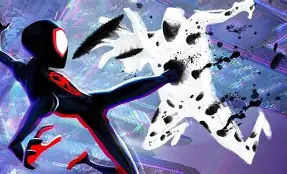
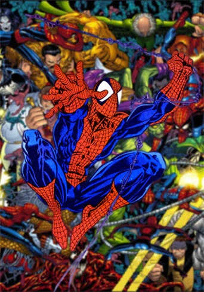
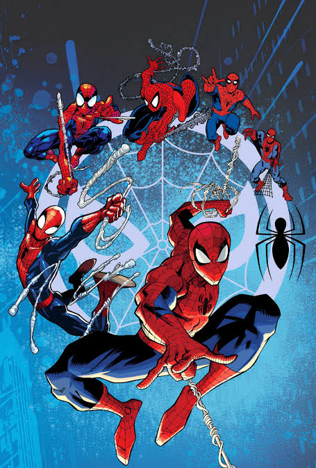
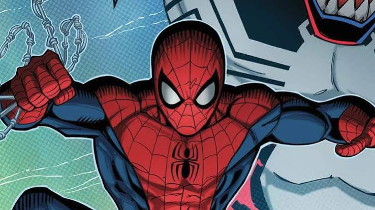
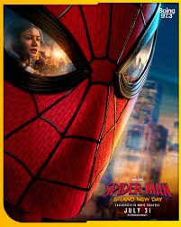

La trilogía original
A comienzos de los años 2000 llegó a los cines la primera gran trilogía sobre el personaje, dirigida por Sam Raimi. Estas películas sentaron las bases del género de superhéroes moderno y fueron un éxito comercial notable en su época.

El reinicio "Amazing"
Unos años más tarde, el estudio impulsó un reinicio de la saga con un nuevo reparto y un tono distinto, más centrado en el misterio detrás del origen del personaje y sus relaciones personales.

La integración al universo compartido
La incorporación del personaje a un universo cinematográfico más amplio permitió cruces con otros héroes y una nueva trilogía centrada en un protagonista adolescente que debe equilibrar su vida escolar con sus responsabilidades.
Tres generaciones de intérpretes. Un mismo legado.
Cada actor que ha encarnado al personaje en el cine ha llegado a una etapa distinta de su carrera y le ha dado un matiz propio: uno marcó la introducción del género al gran público, otro exploró un tono más introspectivo, y el más reciente lo presentó como parte de una generación conectada e hiperactiva, propia de la era digital.

La animación como punto de quiebre. Compruébalo tú mismo.
La llegada de una película animada centrada en un universo de múltiples versiones del personaje sorprendió por su estilo visual, que mezcló técnicas de cómic impreso —tramas de puntos, onomatopeyas y encuadres— con animación por computadora, abriendo la puerta a secuelas que profundizaron aún más en la idea del multiverso.

Y por último, esto. Un dato curioso.
El personaje nació de una idea poco común para su tiempo: un superhéroe adolescente con problemas cotidianos —dinero, estudios, relaciones— además de sus responsabilidades como héroe. Esa combinación de vulnerabilidad humana y poderes extraordinarios es, según muchos críticos, la clave de su popularidad sostenida en el cine durante más de veinte años de adaptaciones continuas.
